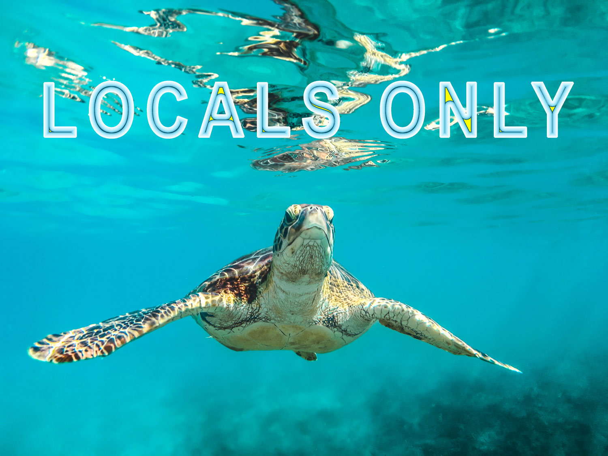
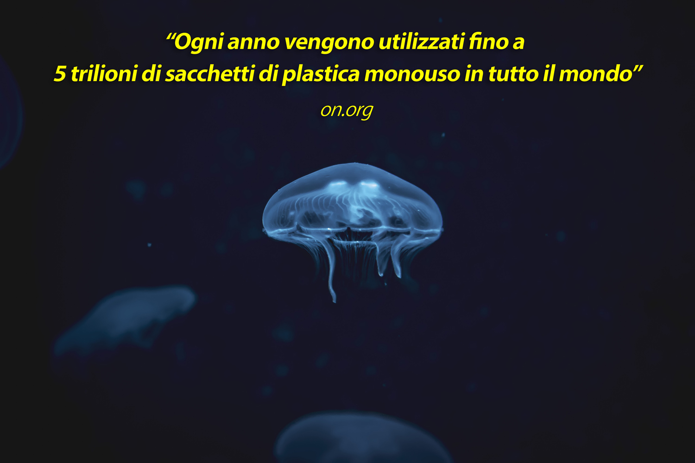
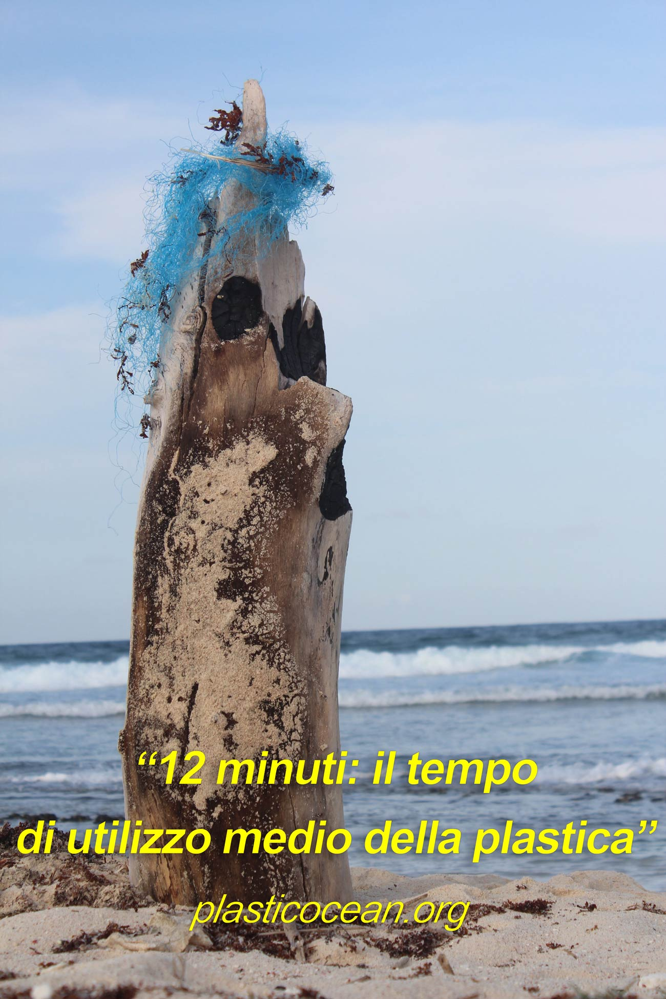
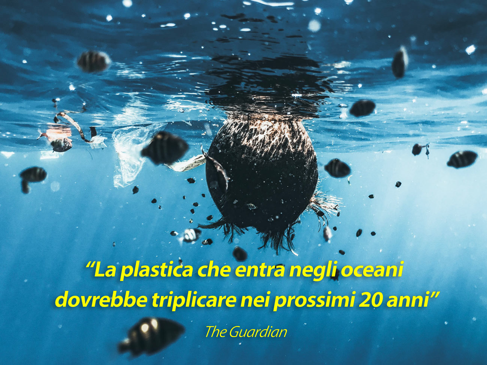

Tra pochi anni praticheremo surf in un mare di plastica. Scopri come cavalcare l’onda della sostenibilità e salvaguardare il mondo sottomarino.
Foto di Cedric Frixon, Unsplash
Immagina di essere in acqua al tramonto, seduto sulla tua tavola da surf, aspettando l’ultima onda della giornata che non arriva mai. Una coppia di gabbiani sorvolano la superficie del mare argentata, il cielo si tinge di mille sfumature arancioni come un’esplosione di colore. Non c’è migliore posto al mondo dove potresti essere in questo momento. Riesci a sentire una connessione forte e indissolubile con il tutto che ti circonda, ti senti parte di questo paradiso marino e in pace con il mondo, come se tu fossi entrato in uno stato di trance.
“Il surf è molto simile a fare l'amore. È sempre bello, non importa quante volte l'hai fatto.”
All'improvviso senti qualcosa che ti sfiora il piede, in un primo momento pensi ad una medusa, ma poi ti rendi conto che non brucia. Abbassi lo sguardo per vedere cosa c’è al lato del tuo piede e vedi un sacchetto di plastica bianco galleggiare indisturbato. Che schifo! L’ennesimo sacchetto di plastica nel mare, che magari rimarrà lì per altri 200 anni, perché noi non abbiamo fatto abbastanza. Raccoglilo! Non lasciarlo fluttuare.
Foto di Ashleigh Robertson, Unsplash
Surf: divertimento o egoismo?
Tutte le volte che entriamo in acqua inizia un turbinio di sensazioni uniche e pure: un cocktail equilibrato di calma, gioia e libertà. La connessione che si crea tra te e l'oceano sembra indistruttibile, ci sentiamo realizzati, parte di un qualcosa di meraviglioso. Il mare è in continuo movimento e noi seguiamo il suo ritmo. Fin dalle prime onde inizia un percorso di insegnamento continuo dove il valore più importante è il rispetto del mare come forza incontrastabile: lottando continuamente con le nostre paure cerchiamo di capire come comportarci in balia delle correnti o come rimanere calmi durante un wipe out dove i secondi sembrano ore.
Fuori dall’acqua ci preoccupiamo solo di pubblicare foto su Instagram, mostrare all'amico l'ennesima tavola che ci siamo comprati o magari pianifichiamo la destinazione del nostro prossimo surf trip a migliaia di km di distanza. Il rispetto dove è finito?
“Fuori dall'acqua, non sono niente.”
Ci dimentichiamo di rispettare questo ambiente che ci dà tanto, non è il nostro parco di divertimenti, ma un ecosistema
fondamentale che è la casa di quasi un milione di specie marine. Inoltre è un mondo senza il quale noi umani non potremmo sopravvivere,
dal momento che provvede almeno al 50% di ossigeno che respiriamo.
Quindi, il nostro mantra non dovrebbe essere restituire all’oceano tutta questa vita che ci dona?
Foto di Katie Rodriguez, Unsplash
Tutte le strade portano al mare
In questi ultimi anni gli ecosistemi marini stanno subendo una degenerazione, che aumenterà ancora di più nel corso del tempo. Il consumismo e la disinformazione che accompagnano la nostra vita quotidiana hanno ripercussioni devastanti sui mari: un mix di plastica di svariate forme e sostanze chimiche che impaurisce solo pronunciarle e che entrano negli oceani senza che nessuno possa o voglia fermarle.
Gli oceani, per come li conosciamo, stanno scomparendo. Dopo aver comprato l'ennesima maschera per fare snorkeling, pagata con un pugno di Euro e di dubbia qualità, potremo ammirare varie forme di cannucce, scordati i cavallucci! Corde dai mille colori, i coralli spesso saranno tristemente sbiancati e in superficie galleggeranno più sacchetti che meduse, da paura!
Il cammino della plastica è molto lungo e inizia da casa nostra (non devo dirtelo io). Come viviamo, tutto quello che compriamo, consumiamo e utilizziamo può finire un giorno o l'altro nell'oceano, la vita della plastica è centenaria e tutte le strade portano al mare.
Sei davvero sicuro di voler perdere la connessione che tanto amiamo con la natura?
Continua a leggere questo post per scoprire come fare la tua parte.
Foto di Tobias Tullius, Unsplash
Ecco alcuni consigli che puoi seguire per aiutare a salvare gli oceani, lunga vita al surf sostenibile!
- Rifiuta la plastica mono uso nella vita di tutti i giorni:
- Raccogli la plastica dalle spiagge (e dalle strade)
- Scegli tavole da surf sostenibili
- Indossa una muta di origine vegetale
- Mangia il pesce, ma responsabilmente
- Acquista creme naturali
Nella galassia ci sono 200 miliardi di stelle. Moltiplicale per 500 e otterrai il numero di pezzi di plastica presenti nei nostri oceani. Fino ad oggi non è stato trovato un modo per rimuovere tutta la plastica presente nel mare, per fortuna abbiamo un'ancora di salvezza: cambiare le nostre abitudini rifiutandola nella nostra quotidianità.
Dai un’occhiata alla regola delle “quattro R” sviluppata da Greenpeace alcuni anni fa, che è fonte di ispirazione per migliaia di persone:
| Rifiuta: la plastica monouso, in questo modo manderai anche un messaggio ai commercianti che dovranno adattarsi al cambiamento. | Utilizza materiali alternativi in modo da poterne sfruttare l'uso anche in futuro. |
| Riduci: acquista il minor numero di prodotti inquinanti possibili. Se pensi di aver bisogno di qualcosa, mettilo in discussione. | Aspetta almeno 24 ore per far passare l'eccitazione iniziale. Acquista solo il necessario, in questo modo la quantità di rifiuti prodotta diminuirà. |
| Riutilizza: scarta il meno possibile, se una cosa è rotta può essere riparata o regalata. Comprare il nuovo per mettere da parte il vecchio, old fashioned. | Stimola la tua creatività. Dai nuova vita agli oggetti che altrimenti avresti buttato nel cestino e, quindi, probabilmente nel mare. |
| Ricicla: elimina il più possibile gli scarti che andranno a finire nella raccolta indifferenziata. Nel mondo soltanto il 15% della plastica viene riciclata. | Sii consapevole con ciò che puoi riciclare e indirizza i tuoi acquisti verso materiali che possono essere riutilizzati. |
“Se non può essere ridotto, riparato, ricostruito, rinnovato, rifinito, rivenduto, riciclato o compostato, dovrebbe essere limitato, ridisegnato o rimosso dalla produzione.”
Foto di Ishan, Unsplash
La birretta post session può aspettare 5 minuti: il tempo necessario per raccogliere una manciata di plastica dalla spiaggia. Meno passeggiate mano nella mano e più iniziative con la plastica in mano! Aspettare un evento proposto da un’organizzazione a favore dell'ambiente non basta: il contributo al mare inizia da te. Invece di condividere l’ennesima foto su Instagram per mostrare al mondo quanto sei figo, pubblicane una pulendo la spiaggia con, per esempio, l’hashtag #2minutebeachcleanup. Questa iniziativa è stata lanciata da un gruppo di surfisti inglesi, Surfers Against Sewage, come risposta al terribile stato delle loro spiagge.
Foto di Gina Jie Sam Foek, Unsplash
Le tavole da surf tradizionali venivano ricavate da alcune piante locali come l’acacia, pesavano come un baby elefante ed erano ad impatto zero sulla natura. Le tavole moderne ultra performanti pesano 10 volte di meno, ma hanno un ciclo di vita molto breve e vengono realizzate con composti chimici, come il poliestere e poliuretano, mortali per l'ecosistema marino. Cambio di rotta! Negli ultimi anni sempre più shapers utilizzano materiali di origine vegetale per realizzare tavole in legno (lasciati ispirare da Otter) o hanno virato verso l'utilizzo di resine ottenute dagli agrumi con meno del 75% di materiali tossici. Dai un occhiata al progetto Ecoboard che può aiutarti a costruire o acquistare tavole ad alte prestazioni surfando l'onda dell’ecosostenibilità.
Foto di Naja Bertolt Jensen, Unsplash
Il neoprene presente nelle mute tradizionali è un colpo basso per la vita sottomarina: la sua produzione infatti richiede petrolio, cloro, una notevole dose di energia e inoltre non è riciclabile. Per fortuna ci sono sempre più marchi che preferiscono prodotti a favore dell’ambiente, ad esempio Visla, che utilizza bottiglie di plastica riciclate, o Patagonia, che propone mute realizzate con caucciú, una gomma naturale.
“Penso che quando un surfista diventa un surfista, è quasi come un obbligo essere allo stesso tempo un ambientalista.”
Chiediti sempre quale pesce stai mangiando. Da dove viene, com’è stato pescato? È una specie a rischio? Quanto mercurio conterrà? E le microplastiche che ha ingerito, finiranno nel mio piatto? Mangia pure il pesce, ma responsabilmente. Leggi le etichette sulla sua provenienza, scegli pesci semplici e specie pelagiche. Il pesce è la fonte primaria di proteine per milioni di persone e per altrettanti individui la pesca è l'unica fonte di guadagno. Te lo concedo, uno spaghetto allo scoglio ogni tanto ci sta e le sardine alla brace non ne parliamo, ma cerca sempre di fare acquisti consapevoli: chiedi al tuo fornitore o al ristorante se è il frutto di una pesca sostenibile a favore dell’equilibrio marino.
“Acqua e aria, i due fluidi essenziali da cui dipende tutta la vita, sono diventati bidoni della spazzatura globali. ”
La maggior parte delle creme solari in commercio sono composte da sostanze chimiche dannose per l'ecosistema marino (e per la tua pelle!). Ossibenzone e ottinoxato contenuti nelle protezioni solari sono mortali per i coralli, ad esempio, poiché ne provocano lo sbiancamento e, di conseguenza, lo sviluppo. Controlla sempre l'etichetta del prodotto, esistono sempre più opzioni a favore dell’ambiente e noi surfisti dovremmo dare il nostro contributo per proteggere l'oceano e i suoi abitanti.
Foto di Sacha Verheij, Unsplash
Prendi parte alla rivoluzione!
Come i pesci, ci piace andare controcorrente, infrangere le consuetudini. Adesso è arrivato il momento di partecipare a una rivoluzione a favore degli oceani con piccoli cambiamenti nel nostro quotidiano. Consuma meno e consapevolmente: non limitarti a rifiutare tutta la plastica monouso, prova a scalare di un paio di marce e rallentare il ritmo della tua vita mettendo in discussione ciò di cui hai realmente bisogno. Cerca di non lasciare tracce: riduci al minimo le tue impronte nei mari del mondo.
È arrivato il momento di restituire all’oceano tutto ciò di cui ci siamo ingiustamente appropriati: la sua integrità. Pensare che tu da solo non puoi fare la differenza non risolverà il problema, tutti noi possiamo e dobbiamo dare il nostro contributo a favore degli oceani, convinci gli altri a fare lo stesso.